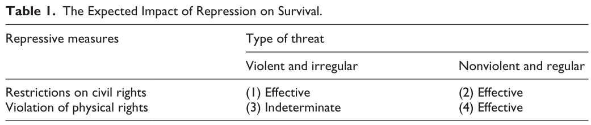
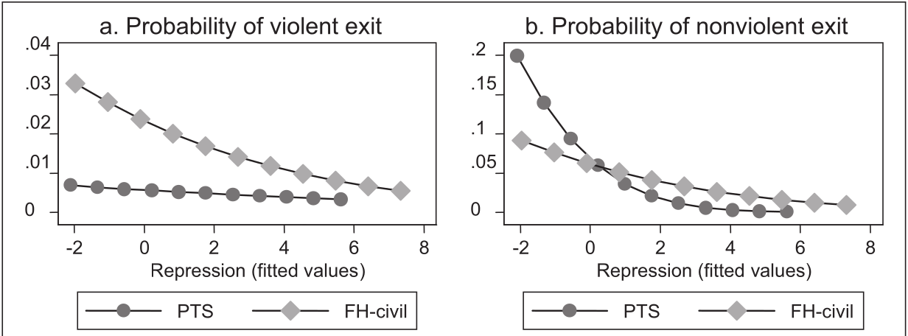

II. How and why do governments use violence against the people inside their borders?
Theories of “Political Violence”
Justin Leinaweaver (Fall 2025)
Escribà-Folch (2013): Dictatorships and Political Violence


Frantz and Kendall-Taylor (2014): …
Evaluate the Framing
Research question
Key concepts
Connections to the literature
Frantz and Kendall-Taylor (2014) “A Dictator’s Toolkit: Understanding How Co-Optation Affects Repression in Autocracies”
Defining the Key Concept: Repression
“Repression is the ‘behavior that is applied by governments in an effort to bring about political quiescence and facilitate the continuity of the regime through some form of restriction or violation of political and civil liberties’ (Davenport, 2000: 6). Concretely, repression ‘deals with applications of state power that violate First Amendment-type rights, due process in the enforcement and adjudication of law, and personal integrity or security’ (Davenport, 2007a: 2). Through these actions governments impose or threaten individuals with sanctions aimed at controlling and suppressing dissent” (546).
How consistent are the framings of the two articles we’ve read this week?
Frantz and Kendall-Taylor (2014) “A Dictator’s Toolkit: Understanding How Co-Optation Affects Repression in Autocracies”
Defining the Key Concept: Co-optation
Frantz and Kendall-Taylor (2014) “A Dictator’s Toolkit: Understanding How Co-Optation Affects Repression in Autocracies”
Diagram the Model (p334-337)
Interests
Institutions
Interactions
Frantz and Kendall-Taylor (2014): The Model
Interests
Institutions
Interactions
Frantz and Kendall-Taylor (2014): The Analysis
Outcome Variable
Violent Repression: Physical Integrity Rights Index (CIRI)
Empowerment Rights Repression: FH Civil Liberties Index
Predictors
Frantz and Kendall-Taylor (2014): The Results
Frantz and Kendall-Taylor (2014): The Results
Escriba-Folch, A. 2013. “Repression, Political Threats, and Survival under Autocracy.” International Political Science Review. 34(5): 543–60.
Frantz, E., and A. Kendall-Taylor. 2014. “A Dictator’s Toolkit: Understanding How Co-Optation Affects Repression in Autocracies.” Journal of Peace Research. 51(3): 332–46.
Case Studies of Groups Reducing Political Violence in Autocracies